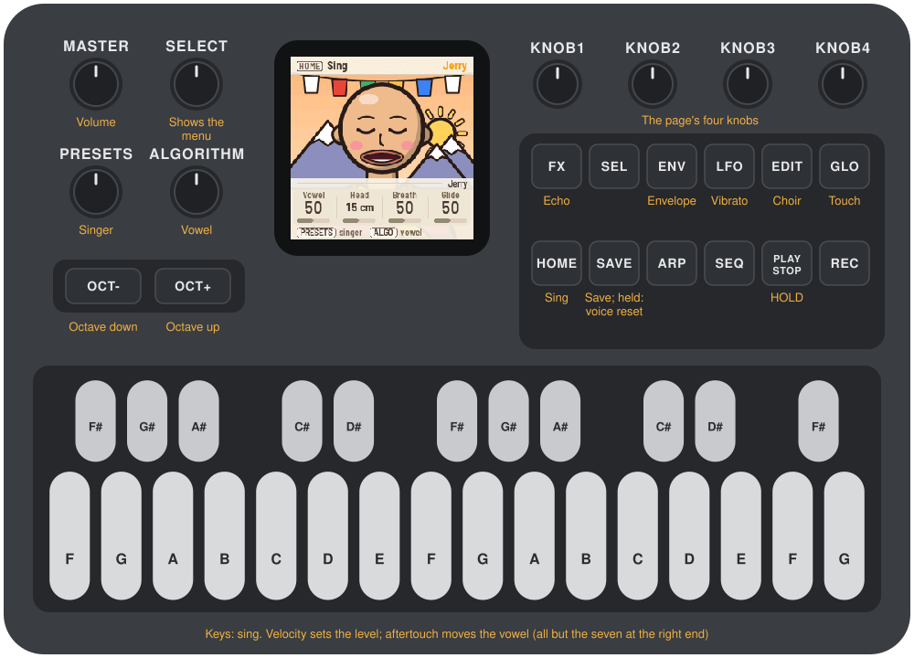
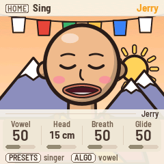
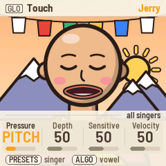
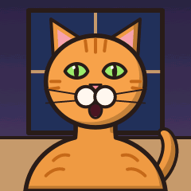
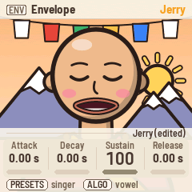
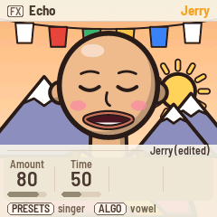

Manual
MONK-1 turns the M-VAVE FM-1 into twelve singers. Each one sings in its own voice, from a monk to a slice of pizza, on its own little stage, and its mouth follows the vowel as it sings. The voice is MonkSynth, Jonathan Taylor's formant vocal synthesizer. The keys have velocity and aftertouch, read from the FM-1's own keys with no changes to the hardware: velocity sets the note's level, aftertouch moves the vowel.

1Install
Try it first: the MONK-1 emulator runs the same code in the browser, with sound. Click lower on a key for more velocity and drag down for aftertouch; on the computer keyboard, hold Shift for aftertouch.
Install: open the web installer in Chrome or Edge, connect the FM-1 with a USB data cable and press Install. Don't unplug it while it's writing; when it finishes, the FM-1 restarts into MONK-1.
Go back: "Back to the stock firmware", at the bottom of the same page, puts M-VAVE's firmware back (download the FM-1 V15 file from the link there, choose it, press the button). M-VAVE's own updater, M-UPGRADE, works too.
Installing other firmware is at your own risk. If the FM-1 ever won't start, see Recovering an FM-1 that won't start.
Install from the command line
Download the firmware file (for example monk-0.9.fwsc) from the releases page, get the MONK-1 source from GitHub, install Python 3 with pip3 install mido python-rtmidi, and run:
python3 tools/fm1_install.py monk-0.9.fwsc2Getting started
- Sing. Press a key: Jerry the monk sings it. Higher velocity is louder; aftertouch on a held key moves the vowel on, towards "ee".
- Glide. Hold a key and press another: the voice glides up to it. Let go of the second and it glides back to the first.
- Change the vowel. Turn ALGORITHM. The mouth follows.
- Meet the others. Turn PRESETS: eleven more singers, each with its own voice.
- Shape the voice. Press HOME and turn KNOB 1–4: vowel, head size, breath, glide. The other page buttons (EDIT, LFO, FX, ENV, GLO) each bring up four more.
- Hold a note. Press PLAY: the note stays after you let go, and the next key takes over.
Each singer remembers your changes to its voice, and MONK-1 saves them by itself a few seconds after you stop.
3Controls
The drawing at the top shows them all; here they are in more detail.
| Control | What it does |
|---|---|
| Keys | Sing. One voice: the newest key held sounds; let go and it falls back to the key still held under it |
| Velocity | The note's level (Touch: Velocity) |
| Aftertouch | The vowel moves, or the pitch rises, or both (Touch: Pressure) |
| OCT− / OCT+ | The keys an octave down or up, from −2 to +2 |
| KNOB 1–4 | The four knobs of the page on the screen |
| PRESETS | The singer |
| ALGORITHM | The vowel, whichever page is on the screen |
| SELECT | Shows the menu |
| MASTER | Volume |
| HOME | The Sing page: vowel, head, breath, glide |
| EDIT | The Choir page: voices, detune, spread, level |
| LFO | The Vibrato page: depth, rate, tune |
| FX | The Echo page: amount, time |
| ENV | The Envelope page: attack, decay, sustain, release |
| GLO | The Touch page: how pressure and velocity play |
| PLAY | HOLD: the note stays after the key |
| SAVE | Save now. Held 1.5 s: this singer's voice goes back to how it came |
SEL, ARP, SEQ and REC do nothing in MONK-1.
4The screen


Most of the time the screen is the singer on its stage. The mouth follows the vowel and opens wider as the note gets louder; with nothing playing, the singer blinks and mouths its vowels to itself.
A page button, a knob or PRESETS brings up the menu over the singer for a few seconds:
- Header: the button that opened the page (as a keycap), the page's name, and the singer.
- Tag: whose the knobs are: the singer's name (with "(edited)" once you've changed its voice), or "all singers" on the Touch page, which is shared.
- Knobs: KNOB 1–4, each with its name, value and a bar. The one you turned last stands out.
- Bottom line: what PRESETS and ALGORITHM do.
Messages such as "SAVED", "HOLD" or "OCTAVE +1" show in the header for a moment.
The lights: the page's button is lit, and PLAY shows green while HOLD is on. The other buttons glow dimly so their labels can be read in the dark. While a key is held, the button lights go dark for an instant each time the key is read, because a lit light upsets the reading; you may see them flicker.
5Playing

One voice. MONK-1 sings one note at a time, as a singer does. The newest key held sounds; let go and the voice goes back to the key still held under it. Moving between held keys glides (Sing: Glide; at 0 it jumps).
Velocity sets the note's level. Touch: Velocity says how much: at 0 every note is as loud as every other, at 100 a light touch is very quiet. A medium press, about velocity 100, keeps the level the singer was made with.
Aftertouch moves the voice. MONK-1 counts it from where the key comes to rest after you play it, not from the moment it lands, so resting a finger on a key sends none; pressing further in does. On the Touch page:
- Pressure says where aftertouch goes: VOWEL moves the vowel on, towards "ee"; PITCH bends the note up, as far as two semitones; BOTH does both; BOTH INV moves the vowel back, towards "oo", as the pitch rises.
- Depth is how far full aftertouch moves the vowel.
- Sensitive: higher means a lighter press reaches full aftertouch.
The seven keys at the right end (C♯ to G) are wired differently inside the FM-1: they have velocity but no aftertouch.
HOLD. PLAY turns HOLD on: the note keeps sounding after you let go, until another key takes over or you press PLAY again.
Octave. OCT− and OCT+ move the keys an octave, from −2 to +2. MONK-1 starts at −1, where the singers sit best: the lowest key is F2. A note already held ends correctly even if you change the octave before you let go.
6The singers



PRESETS turns through the twelve, from MonkSynth's iOS port: Jerry the monk, Guppo, Philip, Suze, Gerald, Bess, EeOo, Snider, Fipsy, Peppo, Marley and Razor. Each comes with its own voice (head size, breath, vibrato, choir, echo, envelope) and keeps your changes to it: change Guppo's vibrato, visit Bess, and Guppo still has your vibrato when you come back. Hold SAVE for 1.5 seconds to put the singer on the screen back to how it came; the others are not touched.
The Touch page, the octave and the singer you were on are shared, not per singer.
7The pages
Each page button brings up its four knobs. All values are per singer except on Touch.


| Page | Button | KNOB 1 | KNOB 2 | KNOB 3 | KNOB 4 |
|---|---|---|---|---|---|
| Sing | HOME | Vowel | Head | Breath | Glide |
| Choir | EDIT | Voices | Detune | Spread | Level |
| Vibrato | LFO | Depth | Rate | Tune | |
| Echo | FX | Amount | Time | ||
| Envelope | ENV | Attack | Decay | Sustain | Release |
| Touch | GLO | Pressure | Depth | Sensitive | Velocity |
- Vowel: from "oo" through "oh", "ah" and "eh" to "ee". ALGORITHM turns it too, from any page.
- Head: the size of the singer's vocal tract, in centimetres: a small head sings brighter vowels, a big one darker.
- Breath: noise in the voice, from clear to whispered.
- Glide: how long the voice takes to slide between held keys.
- Voices: a choir of up to ten, singing together. Detune spreads their pitches (in cents), Spread their head sizes; Level is the voice's volume.
- Vibrato Depth and Rate; Tune moves the whole voice up to 12 semitones either way.
- Echo Amount and Time: a stereo echo after the voice.
- Envelope: attack, decay and release in seconds (up to five), sustain as a level.
8MIDI
Connect the FM-1 with a USB cable and it shows up as a MIDI device named "MONK-1 FM-1" (a Mac that knew the FM-1 with other firmware may keep the old name until you remove it in Audio MIDI Setup).
Out: the notes you play, on channel 1, with the velocity they landed with, and polyphonic aftertouch: each held key's pressure. Record a performance and it plays back on any synth that listens to aftertouch.
In: MONK-1 sings what it receives:
| Message | What it does |
|---|---|
| Notes, any channel | Sing, with their velocity |
| Aftertouch (channel or polyphonic) | Pressure |
| CC 1 | Vowel |
| CC 5 | Glide |
| CC 7 | Level |
| CC 12 | Echo amount |
| CC 13 | Head |
| CC 120, 123 | All notes off |
Screen reader
MONK-1 can tell the FM-1 Screen Reader what its screen shows, over the same USB cable: the singer you pick, the page and its knobs, a knob's value as you turn it, and what each button did (hold, octave, saved). Its "Read the whole screen" button tells you everything at once. Open the page in Chrome with the FM-1 plugged in; it speaks with its own voice, or hands the words to your computer's screen reader. The singers' faces are just for looking at, so they stay quiet.
9Saving
MONK-1 saves by itself about four seconds after you stop changing things (and at most every ten seconds). Press SAVE to save at once. What is saved: every singer's voice as you left it, the Touch page, the octave and the singer you were on.
10Troubleshooting
Update mode: hold OCT− and OCT+ together for five seconds. A countdown appears; let go before it ends to cancel.
Calibration: if a button or knob does the wrong thing, hold OCT− and OCT+ while you switch the FM-1 on. The screen then asks you to press each button and turn each knob in turn.
Velocity or aftertouch feel off: keys differ a little from one FM-1 to the next. Turn Touch: Sensitive up if aftertouch hardly moves the vowel, down if it jumps; Touch: Velocity down if the levels vary too much.
After a crash: MONK-1 shows a red CRASH screen and restarts by itself a few seconds later. If you report the problem, include the numbers on that screen (a photo is easiest) and what you were doing.
Safe mode: if MONK-1 crashes twice in a row while starting, it starts in SAFE MODE instead. There's no sound, but USB works, so the web installer can reach it: reinstall MONK-1, or put the stock firmware back from the same page. Press PLAY to try starting MONK-1 normally again. If even safe mode fails twice, the FM-1 drops into the chip's own update mode, and only the rescue below can reach it.
Recovering an FM-1 that won't start
An FM-1 in the chip's own update mode shows a blank screen, and neither the web installer nor M-VAVE's updater can see it. A script can put M-VAVE's firmware back, on a Mac, with the USB cable you already have.
Open Terminal, paste this line and press Return:
bash -c "$(curl -fsSL https://raw.githubusercontent.com/charlesvestal/fm1-monk/main/tools/fm1_rescue.sh)"- If a window asks to install the command line developer tools, click Install. When it has finished, paste the line again.
- If it asks for a password, type your Mac password (nothing shows as you type) and press Return.
- When it says it's waiting, plug the FM-1 in and switch it on. The script catches it, checks the chip, saves a backup of the FM-1's memory in the
fm1-rescuefolder in your home folder, and asks before it writes anything. - Type yes and press Return. Don't unplug anything until it says it's restarting the FM-1. The FM-1 then starts into its original firmware, and you can install MONK-1 again from there.
The script downloads M-VAVE's FM-1 V15 firmware and JieLi's flash loader, and checks both against known fingerprints. It writes only the firmware area of the memory, never the bootloader or the FM-1's own settings, and checks everything it writes. Running it again is always safe. If it fails, copy everything in the Terminal window and open an issue. If the FM-1 never shows up at all, Felucca's FM-1-transporter (a small RP2040 board wired to the USB lines) can still reach it.
11Parameters
| Page | Value | Range | Default |
|---|---|---|---|
| Sing | Vowel | 0–100 | per singer |
| Sing | Head | 0–30 cm | per singer |
| Sing | Breath | 0–100 | per singer |
| Sing | Glide | 0–100 | per singer |
| Choir | Voices | 1–10 | per singer |
| Choir | Detune | 0–50 cents | per singer |
| Choir | Spread | 0–100 | per singer |
| Choir | Level | 0–100 | per singer |
| Vibrato | Depth | 0–100 | per singer |
| Vibrato | Rate | 0–100 | per singer |
| Vibrato | Tune | −12 – +12 semitones | 0 |
| Echo | Amount | 0–100 | per singer |
| Echo | Time | 0–100 | per singer |
| Envelope | Attack, Decay, Release | 0–5.00 s | per singer |
| Envelope | Sustain | 0–100 | per singer |
| Touch | Pressure | Vowel, Pitch, Both, Both inv | Vowel |
| Touch | Depth | 0–100 | 50 |
| Touch | Sensitive | 0–100 | 50 |
| Touch | Velocity | 0–100 | 50 |
| PRESETS | Singer | the twelve | Jerry |
| OCT− / OCT+ | Octave | −2 – +2 | −1 (F2 to G4) |
12Credits
MONK-1 is free software under the GNU General Public License, version 3. If you share the firmware, you must also share its source code.
- The voice is MonkSynth by Jonathan Taylor (MIT), ported to the FM-1; MonkSynth is itself an homage to the Delay Lama plug-in by AudioNerdz (2002). MonkSynth is offered completely free of charge; if you enjoy it, you are kindly requested to make a donation at savetibet.org.
- The singers, their drawings and their voices come from MonkSynth's iOS port; the pressure routings from its port to Schwung.
- The velocity and pressure come from Velo, which reads how hard the FM-1's keys are pressed.
- The platform (hardware layer, USB, update loader, installer and storage) is from Felucca by Leo Kuroshita, Hügelton Instruments, by way of X0X and FoMni-1. The menu's layout comes from Polly.
- The idea of running FM-1 firmware in the browser comes from Groove OS.
- The fonts are Barlow Semi Condensed and Terminus (SIL Open Font License).
M-VAVE and FM-1 are trademarks of their owners. MONK-1 is not connected with M-VAVE or Hügelton Instruments.